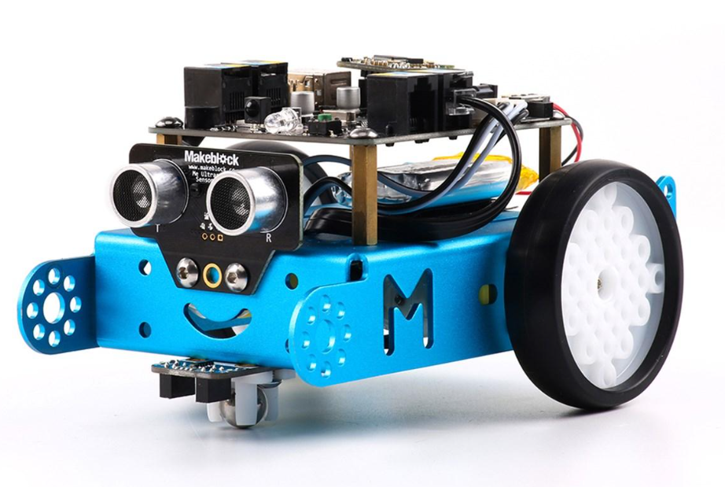

Déplacement
Avancer, reculer et tourner à gauche ou à droite.
Découvrez notre projet pédagogique de robotique
Découvrir le projetLe Bac Pro CIEL (Cybersécurité, Informatique et réseaux, Électronique) permet aux élèves de développer des compétences en électronique, en réseaux informatiques et en programmation.
Le robot mBot est un petit robot éducatif programmable, utilisé par les élèves de première du Lycée Jacques Prévert.
Il permet de découvrir la robotique, l'électronique et la programmation informatique à travers des activités pratiques.

Avancer, reculer et tourner à gauche ou à droite.
Détecter les obstacles grâce au capteur à ultrasons.
Suivre une ligne noire grâce à un capteur spécifique.
Exécuter des programmes créés par les élèves.
Projet pédagogique de robotique réalisé dans le cadre du Bac Pro CIEL.
Visiter Facebook